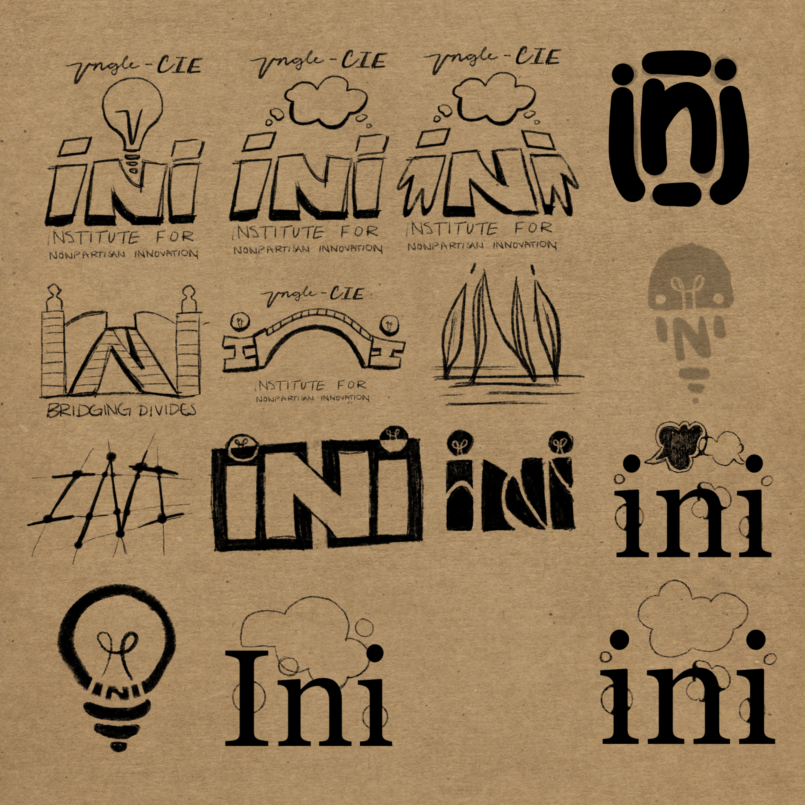
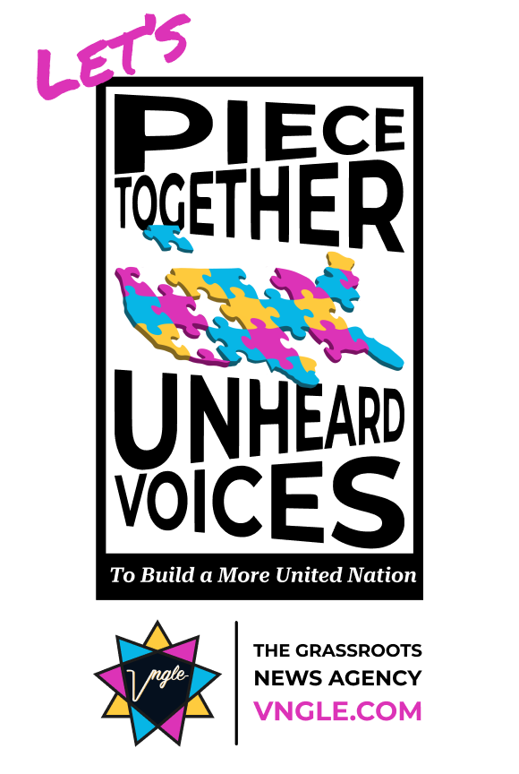

Internship Project
Full Stack Developer Internship
Georgia Tech / Vngle Grassroots News Agency
Internship Project
Georgia Tech / Vngle Grassroots News Agency
About The Project
During my Full Stack Developer internship with Georgia Tech and Vngle Grassroots News Agency, I worked on web development projects as part of a development team.
The internship gave me experience working with both front-end and back-end technologies while contributing to an existing software project.
My work included developing interfaces with React, working with Node.js and PostgreSQL, and gaining experience with the development process used to build and maintain a full-stack application.
Built and worked with React interfaces while developing features for the application.
Worked with Node.js to support application functionality and communication between different parts of the system.
Worked with PostgreSQL while developing and managing application data.
See The Project

Development Process
This internship gave me experience working on a real development project rather than building an application entirely on my own.
I worked with an existing codebase and gained experience understanding how different parts of a full-stack application fit together.
My responsibilities involved developing and modifying application features while working with front-end, back-end, and database technologies.
Working in an internship environment also gave me experience with collaborative development, working through technical problems, and contributing to a larger software project.
This demonstration covers the data workflow connecting the Vngle application to its editorial management system. Data collected through the application is sent to AWS for storage and then transferred to Drupal, where it can be organized and managed by the editorial team. This workflow supports reviewing submissions, searching and filtering content, editing descriptions, and approving content for publication.
This walkthrough demonstrates the Drupal-based editor tool used to manage content received from the Vngle application. My primary contributions focused on developing the user interface and implementing the search functionality in Drupal using PHP. The tool enables editors to find and review submissions, navigate content, edit descriptions, and approve items as part of the editorial workflow.


A mini project focused on presenting myself as a product, highlighting my skills, strengths, and professional identity.

A mini project focused on creating a promotional video for Vngle, highlighting the features and benefits of the platform.
React — Used to build and develop front-end interfaces and components.
Node.js — Used for back-end development and application functionality.
PostgreSQL — Used for storing and working with application data.
Git / GitHub — Used for version control and managing project code.
Reflection
This internship helped me develop a better understanding of full-stack web development and how front-end, back-end, and database technologies work together.
I gained practical experience working with React, Node.js, and PostgreSQL while contributing to an existing application.
I also learned how to navigate an existing codebase, work through technical problems, and contribute to a software project in a professional development environment.